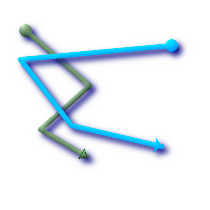
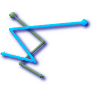
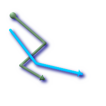
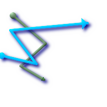

ST_LineCrossingDirection — Given 2 linestrings, returns a number between -3 and 3 denoting what kind of crossing behavior. 0 is no crossing.
integer ST_LineCrossingDirection(geometry linestringA, geometry linestringB);
Given 2 linestrings, returns a number between -3 and 3 denoting what kind of crossing behavior. 0 is no crossing. This is only supported for LINESTRING
Definition of integer constants is as follows:
0: LINE NO CROSS
-1: LINE CROSS LEFT
1: LINE CROSS RIGHT
-2: LINE MULTICROSS END LEFT
2: LINE MULTICROSS END RIGHT
-3: LINE MULTICROSS END SAME FIRST LEFT
3: LINE MULTICROSS END SAME FIRST RIGHT
Availability: 1.4
 Line 1 (green), Line 2 ball is start point, triangle are end points. Query below.
SELECT ST_LineCrossingDirection(foo.line1, foo.line2) As l1_cross_l2 ,
ST_LineCrossingDirection(foo.line2, foo.line1) As l2_cross_l1
FROM (
SELECT
ST_GeomFromText('LINESTRING(25 169,89 114,40 70,86 43)') As line1,
ST_GeomFromText('LINESTRING(171 154,20 140,71 74,161 53)') As line2
) As foo;
l1_cross_l2 | l2_cross_l1
-------------+-------------
3 | -3
|
 Line 1 (green), Line 2 (blue) ball is start point, triangle are end points. Query below.
SELECT ST_LineCrossingDirection(foo.line1, foo.line2) As l1_cross_l2 ,
ST_LineCrossingDirection(foo.line2, foo.line1) As l2_cross_l1
FROM (
SELECT
ST_GeomFromText('LINESTRING(25 169,89 114,40 70,86 43)') As line1,
ST_GeomFromText('LINESTRING (171 154, 20 140, 71 74, 2.99 90.16)') As line2
) As foo;
l1_cross_l2 | l2_cross_l1
-------------+-------------
2 | -2
|
 Line 1 (green), Line 2 (blue) ball is start point, triangle are end points. Query below.
SELECT
ST_LineCrossingDirection(foo.line1, foo.line2) As l1_cross_l2 ,
ST_LineCrossingDirection(foo.line2, foo.line1) As l2_cross_l1
FROM (
SELECT
ST_GeomFromText('LINESTRING(25 169,89 114,40 70,86 43)') As line1,
ST_GeomFromText('LINESTRING (20 140, 71 74, 161 53)') As line2
) As foo;
l1_cross_l2 | l2_cross_l1
-------------+-------------
-1 | 1
|
 Line 1 (green), Line 2 (blue) ball is start point, triangle are end points. Query below.
SELECT ST_LineCrossingDirection(foo.line1, foo.line2) As l1_cross_l2 ,
ST_LineCrossingDirection(foo.line2, foo.line1) As l2_cross_l1
FROM (SELECT
ST_GeomFromText('LINESTRING(25 169,89 114,40 70,86 43)') As line1,
ST_GeomFromText('LINESTRING(2.99 90.16,71 74,20 140,171 154)') As line2
) As foo;
l1_cross_l2 | l2_cross_l1
-------------+-------------
-2 | 2
|
SELECT s1.gid, s2.gid, ST_LineCrossingDirection(s1.the_geom, s2.the_geom) FROM streets s1 CROSS JOIN streets s2 ON (s1.gid != s2.gid AND s1.the_geom && s2.the_geom ) WHERE ST_CrossingDirection(s1.the_geom, s2.the_geom) > 0;